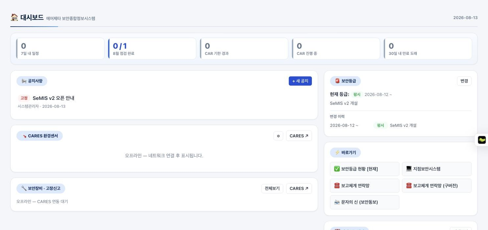
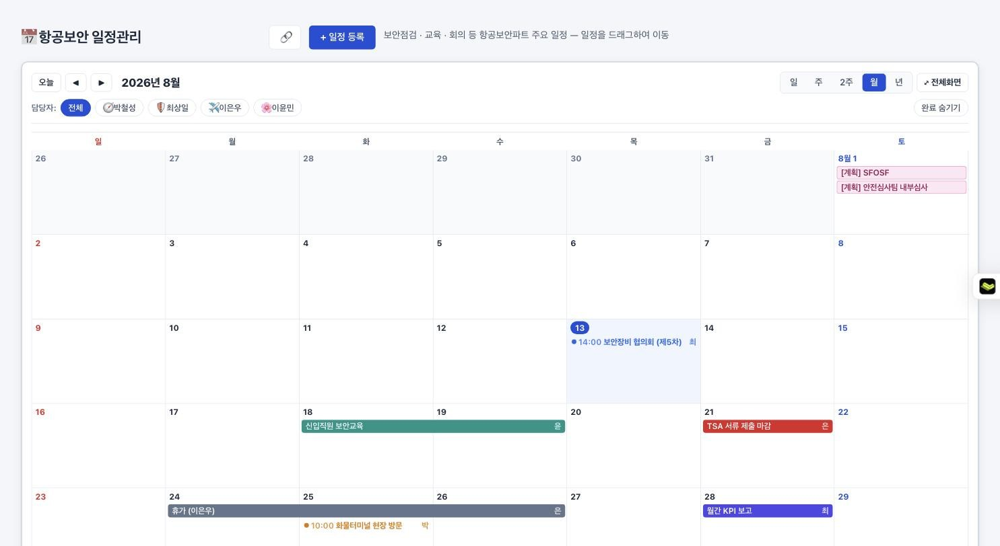
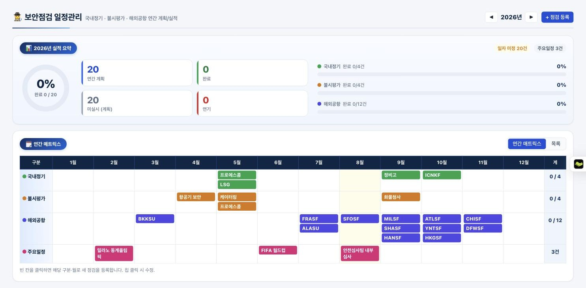
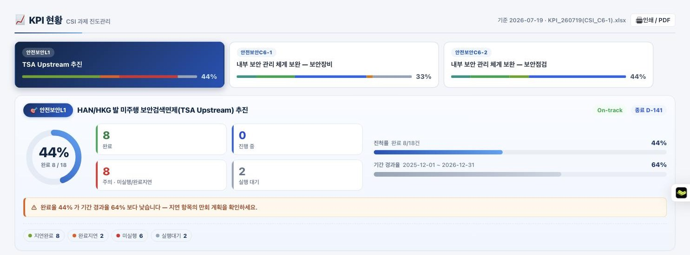

USER GUIDE
SeMIS v2
사용 안내서
에어제타 보안종합정보시스템 · Security Management Information System
🗂 항공보안 업무를 한 곳에서
⚡ 입력 즉시 전 사용자 실시간 공유
🔐 권한별 맞춤 화면 · 간편 로그인
🤖 AI 비서 "세미"가 검색을 도와드립니다
에어제타 항공보안파트
v2.44 기준 · 2026. 08.
1
SeMIS v2 는 어떤 시스템인가요?
소개
SeMIS 는 에어제타 항공보안 업무 전반 — 규정 · 점검 · 장비 · 교육 · 출입증 · 회의 · 일정 — 을
하나의 웹사이트에서 관리하는 통합 정보시스템입니다.
설치 없이 인터넷 브라우저만 있으면 PC · 태블릿 · 휴대폰 어디서나 사용할 수 있습니다.
⚡실시간 공유입력·수정하면 다른 사용자 화면에도 즉시 반영됩니다. 파일을 주고받을 필요가 없습니다.
🔐간편 로그인부여받은 접속 암호 하나만 입력하면 됩니다. 아이디를 외울 필요가 없습니다.
👥권한별 화면직무에 맞는 메뉴와 정보만 보입니다. 대외비는 권한자에게만 표시됩니다.
📱반응형 화면휴대폰에서도 화면이 자동으로 맞춰집니다. 현장에서 바로 기록하세요.
🔎통합 검색Ctrl+K 하나로 메뉴 · 문서 · 기록 · 링크를 한 번에 찾습니다.
🤖AI 비서 세미화면 오른쪽 아래 말풍선에게 물어보세요. 자료를 찾아주고 등록도 도와줍니다.
데이터가 흐르는 방식 — 입력 한 번, 모두의 화면에
✍️담당자가 입력점검 결과 · 회의록 · 일정 등을 화면에서 바로 기록
▶
☁️공용 DB 저장저장 즉시 암호화된 공용 데이터베이스에 기록
▶
🖥📱전원 실시간 반영같은 화면을 보는 모든 사용자에게 몇 초 안에 표시
▶
📊자동 집계대시보드 · KPI · 통계에 자동으로 합산
이 안내서의 구성
1SeMIS v2 는 어떤 시스템인가요?2쪽
2시작하기 — 접속 · 로그인 · 권한3쪽
3화면 구성 한눈에 보기4쪽
4대시보드 읽는 법5쪽
5일정관리 — 팀 공용 캘린더6쪽
6보안점검 — 연간 계획과 실적7쪽
7회의록 · QR 서명 · 협의회8쪽
8전체 메뉴 안내 · HQ 전용 화면9쪽
9AI 비서 "세미" · 활용 팁 · 문의10쪽
이 안내서는 처음 사용하는 분 기준으로 작성되었습니다.
궁금한 것이 생기면 언제든 시스템 안의 AI 비서 세미에게 먼저 물어보세요.
2
시작하기 — 접속 · 로그인 · 권한
3분이면 충분합니다
▲ 로그인 화면아이디 없이 접속 암호 한 칸만 있습니다. 👁 버튼으로 입력한 암호를 확인할 수 있습니다.
1️⃣주소 입력 — 브라우저 주소창에 semis.pe.kr 을 입력합니다.
2️⃣암호 입력 — 부여받은 접속 암호를 입력하고 [로그인]. 그게 전부입니다.
3️⃣바로 사용 — 내 권한에 맞는 메뉴가 왼쪽에 자동으로 나타납니다.
⚠ 접속 암호는 개인에게 부여된 보안 정보입니다. 타인과 공유하지 마시고, 분실 시 항공보안파트로 즉시 알려주세요.
로그인이 필요 없는 유일한 경우 — 회의 참석 서명. QR 코드를 휴대폰으로 스캔하면 서명 화면으로 바로 연결됩니다. (8쪽 참조)
권한 등급 — 접속 암호가 등급을 결정합니다
일반사용자일반 직원
일반사항 열람
보안관리자지점·유관부서 감독자
보안사항 열람
항공보안HQ항공보안파트원
전체 열람 + 등록 + 수정
시스템관리자시스템 운영
HQ + 메뉴·계정·설정
협력업체 계정(프로에스콤 · 인씨스 등)은 별도 등급으로, 자기 업체 관련 화면만 표시됩니다 — 대금 청구 입력 등.
| 등급 | 할 수 있는 일 |
|---|
| 일반사용자 | 공지 · 보안뉴스 · 보안등급 · 규정 · 출입증 신청 안내 등 일반 사항 열람 |
| 보안관리자 | + 점검 · 장비 · 교육 · 연락망 · 회의록 등 보안 사항 열람 (편집은 불가) |
| 항공보안HQ | + 모든 메뉴 등록 · 수정, 대외비(비용 · 계약 · KPI · 암호) 열람 |
| 시스템관리자 | + 메뉴 구성 · 계정 관리 · 백업 등 시스템 설정 |
3
화면 구성 한눈에 보기
어디에 무엇이 있나요
SeMIS v2
🔍 통합 검색 — 메뉴 · 문서 · 기록 · 링크 (Ctrl+K)
평시
최상일 프로
🏠 대시보드
📅 일정관리
🗒️ 회의록 게시판
📈 KPI 현황
보안 점검
🕵️ 보안점검 일정관리
📋 부적합·시정조치
보안장비
🔧 보안장비 유지관리
🤝 보안장비 협의회
보안 증진
🎓 보안교육 관리
비정상 상황
☎️ 보고체계 연락망
7일 내 일정이번 달 점검CAR만료 도래
📢 공지사항 클릭하면 본문이 펼쳐집니다
🌡 환경센서 장비실 온습도 실시간 표시
🚨 보안등급 현재 등급과 변경 이력
📅 다가오는 일정 · 🕵️ 점검 실적 · 📈 KPI 카드가 이어집니다
① 헤더 — 검색 · 보안등급 · 내 계정
② 사이드바 — 전체 메뉴
③ 본문 — 선택한 메뉴의 내용
1헤더 — 통합 검색창(Ctrl+K), 현재 보안등급 배지, 내 계정, 로그아웃이 있습니다.
2사이드바 — 업무 그룹별 메뉴. ☰ 버튼으로 접을 수 있고, 내 권한에 없는 메뉴는 아예 보이지 않습니다.
3본문 — 선택한 메뉴의 내용. 로그인 직후에는 대시보드가 표시됩니다.
꼭 알아두면 좋은 기본 조작 5가지
통합 검색 (Ctrl+K) — 어느 메뉴에 있는지 몰라도 단어만 입력하면 시스템 전체에서 찾아줍니다.
행 클릭 = 상세 보기 — 목록의 줄을 클릭하면 세부 내용이 열립니다. 파란 제목은 문서가 바로 열립니다.
🖨 인쇄 / PDF — 인쇄 버튼이 있는 화면(KPI · 회의록 등)은 A4 보고서로 출력됩니다.
📎 첨부파일 — 공지 · 회의록 등에 파일을 붙일 수 있습니다. 끌어다 놓기(드래그앤드롭)도 됩니다.
버튼이 안 보이면 열람 전용 — 등록 · 수정 버튼이 없으면 내 권한으로는 보기만 가능한 화면입니다.
📱 휴대폰에서는 화면이 자동으로 세로 배치로 바뀝니다. 왼쪽 위 ☰ 버튼으로 메뉴를 열고 닫으세요.
화면이 이상하면 새로고침(F5) — 업데이트 직후에는 브라우저가 이전 화면을 기억하고 있을 수 있습니다.
4
대시보드 읽는 법
로그인하면 처음 보이는 화면
semis.pe.kr — 대시보드

1
2
3
▲ 대시보드실제 화면입니다. 위에서 아래로 — 요약 타일 → 왼쪽 큰 카드 → 오른쪽 현황 카드 순서로 보면 됩니다.
1요약 타일 (맨 위) — "오늘 챙길 것"의 개수입니다. 7일 내 일정 · 이번 달 점검 완료 · CAR 기한 경과/진행 중 · 30일 내 만료 도래.
숫자가 붉거나 주황이면 확인이 필요하다는 뜻이고, 타일을 클릭하면 해당 메뉴로 바로 이동합니다.
2왼쪽 카드 — 📢 공지사항(제목 클릭 시 본문 펼침, "고정" 배지는 중요 공지),
🌡 CARES 환경센서(장비실 온습도 — 임계치 초과 시 붉게 강조), 🔧 보안장비 · 고장신고 현황.
3오른쪽 카드 — 🚨 현재 보안등급과 변경 이력, ⚡ 바로가기(자주 쓰는 화면 · 외부 시스템),
📅 다가오는 일정, 📈 KPI 진행현황, 🕵️ 보안점검 실적, ⏳ 만료 · 점검 도래(D-일수 순 정렬) 카드가 이어집니다.
추천 — 아침 1분 확인 루틴
🔑접속 · 로그인semis.pe.kr → 암호 입력
▶
🔢요약 타일 확인붉은 숫자가 있으면 클릭해서 확인
▶
📢고정 공지 확인새 공지 · 고정 공지 제목 훑어보기
▶
📅오늘 일정 확인다가오는 일정 카드에서 오늘 · 내일 확인
👤 일반사용자에게는 보안 카드 대신 🗞 보안 뉴스와 📊 항공보안 인사이트(반입물품 · 검색절차 안내)가 표시됩니다.
같은 주소, 같은 화면이지만 권한에 따라 내용이 달라집니다.
5
일정관리 — 팀 공용 캘린더
보안점검 · 교육 · 회의 일정을 한 판에
semis.pe.kr — 일정관리

▲ 월 보기색상은 일정 종류, 왼쪽 아래 이니셜은 담당자입니다.
분홍색 [계획]/[점검] 일정은 보안점검에서 자동으로 연동된 것입니다 (7쪽).
일정 등록 — 날짜 칸을 클릭하면 등록 창이 열립니다. 기간 일정, 색상, 담당자를 지정할 수 있습니다.
드래그 이동 — 일정 막대를 끌어 다른 날짜에 놓으면 이동합니다. Esc 로 취소.
반복 일정 — 매주 · 매월 등 반복을 걸고, 회차별로 완료 체크를 할 수 있습니다.
리마인더 — 2주 전 ~ 1시간 전 알림을 설정하면 화면에 미리 알려줍니다.
보기 전환 — 일 / 주 / 2주 / 월 / 년 + ⤢ 전체화면. 상단 담당자 칩으로 사람별 필터.
완료 체크 — 일정 칩에서 바로 완료 표시. "완료 숨기기"로 남은 일만 볼 수 있습니다.
구글 캘린더 연동 — 🔗 버튼의 구독 주소를 구글 캘린더에 추가하면 휴대폰에서도 보입니다.
나에게만 보이기 — 개인 일정은 다른 사람에게 보이지 않게 등록할 수 있습니다.
일정 등록은 이렇게 — 4단계
🖱① 날짜 칸 클릭시작할 날짜를 클릭하면 등록 창이 열림
▶
⌨️② 내용 입력제목 · 기간 · 시간 · 메모(링크 · 사진 첨부 가능)
▶
🎨③ 색 · 담당 지정일정 종류별 색상, 담당자, 리마인더 선택
▶
💾④ 저장저장 즉시 팀 전체 캘린더에 반영
💡 회의실 · 차량 예약도 일정 등록 창의 체크박스로 함께 관리합니다 — 겹치면 등록할 때 알려줍니다.
6
보안점검 — 연간 계획과 실적
국내정기 · 불시평가 · 해외공항
semis.pe.kr — 보안점검 일정관리

▲ 연간 매트릭스위 요약 패널에서 완료율과 구분별 진행 상황을 먼저 보고,
아래 표에서 구분 × 월로 한 해 계획을 확인합니다.
빈 칸 클릭 = 그 구분 · 그 달의 새 점검 등록
칩 클릭 = 점검 내용 · 일자 · 결과 수정
칩 드래그 = 계획 월 이동 (확정 일자도 함께 이동)
결과 기록 — 시정조치 · 개선권고 · 현장시정 · 관찰사항 유형별로 남깁니다.
목록 보기 — 표 대신 일자순 목록으로 전환할 수 있습니다.
시정조치(CAR) — 중요한 부적합은 CAR 메뉴에서 기한 · 위험도와 함께 추적합니다. (HQ)
점검 ↔ 캘린더 자동 연동 — 한 번 입력하면 양쪽에
🕵️점검 등록보안점검 화면에서 대상 · 계획 월 입력
▶
📅캘린더 자동 생성일자 미정이면 연분홍 [계획], 확정되면 분홍 [점검]
▶
↔️양방향 반영캘린더에서 일정을 옮기면 점검 일자도 함께 변경
▶
✅완료 동기화어느 쪽에서 완료 처리해도 양쪽 모두 완료
점검 상태 4종 — 칩 색과 표시
| 상태 | 표시 | 의미 |
|---|
| 계획 | — | 아직 실시 전. 일자를 확정하면 캘린더 일정도 확정 표시로 바뀝니다 |
| 완료 | ✓ | 실시 완료. 결과(시정조치 등)를 함께 기록합니다 |
| 연기 | ⏸ | 사유가 있어 미룬 점검 — 요약 패널에 별도 집계됩니다 |
| 취소 | ✕ | 실시하지 않기로 확정 — 완료율 계산에서 제외됩니다 |
📌 점검이 원본(우선권)입니다 — 제목 · 구분 · 담당은 점검 값이 항상 기준이 되므로 두 화면이 어긋날 걱정이 없습니다.
7
회의록 · QR 서명 · 협의회
회의 자리에서 바로 기록
회의록의 한살이 — 만들기부터 다음 회의까지
🗒️① 새 회의록폴더만 고르면 회차 · 제목 · 장소 · 참석자 명단 자동 채움
▶
✍️② 회의 중 기록서식 편집기에 그대로 입력 — 자동 저장
▶
📱③ QR 서명참석자가 휴대폰으로 스캔 → 손가락 서명
▶
📌④ 결정사항 추적기한 있는 결정은 일정관리에 자동 등록
▶
🔁⑤ 다음 회의로미결 사항이 다음 회의록에 자동 이월
QR 서명 — 참석자는 로그인이 필요 없습니다
회의록 화면의 QR을 크게 띄우고, 참석자가 휴대폰 카메라로 스캔합니다.
이름을 확인(또는 직접 입력)하고 손가락으로 서명하면 참석자 표에 자동 기록됩니다.
회의록마다 다른 6자리 코드가 생성되므로 그 회의 참석자만 서명할 수 있습니다.
끝나면 🖨 버튼으로 서명이 포함된 A4 회의록을 바로 출력합니다.
🤝 보안장비 협의회 — 전용 서식 회의록
장비 고장 사례 표(발생일 · 장비 · 증상 · 근본원인 · 조치)가 있는 전용 양식입니다.
사례는 CARES(장비관리 시스템)의 고장 이력에서 자동으로 불러올 수 있고, 사례 행을 클릭하면 원본 기록이 열립니다.
결정사항 추적 탭 — 이렇게 모아서 보입니다 (예시)
| 결정 · 조치사항 | 회의 | 기한 | 담당 | 상태 |
|---|
| X-ray 실화물 부하 테스트 일정 협의 | 제5차 보안장비 협의회 | 2026-08-31 | 최상일 | 진행 중 |
| ETD 보호케이스 1대 시범 설치 | 제4차 보안장비 협의회 | 2026-08-20 | 프로에스콤 | ⚠ 기한 임박 |
| 지점 보안규정 개정본 배포 | 정례회의 7월 | 2026-07-31 | 이윤민 | 완료 |
▲ 결정사항 추적모든 회의의 결정사항이 한 화면에 모입니다 — 미완료 우선 정렬, 기한 초과는 ⚠ 강조. 행을 누르면 해당 회의록이 열립니다.
🔒 회의록 열람은 "참석 사실" 기준입니다 — 내가 참석한 회의는 언제든 볼 수 있고,
참석하지 않은 회의는 HQ 이상만 볼 수 있습니다.
8
전체 메뉴 안내 · HQ 전용 화면
열람 권한과 함께
| 메뉴 | 내용 | 열람 |
|---|
| 🏠 대시보드 | 공지 · 요약 타일 · 업무 현황 카드 | 전체 |
| 📅 일정관리 | 팀 캘린더 — 반복 · 리마인더 · 드래그 · 구글 연동 | 관리자+ |
| 🗒️ 회의록 게시판 | 회의록 작성 · QR 서명 · 결정사항 추적 · A4 인쇄 | 관리자+ |
| 📖 항공보안등급 | 국가 보안등급 5단계 소개 · 현재 등급 | 전체 |
| 🌐 규정 / 인허가 | 국제 · 국가 · 자체 보안규정 열람, IOSA 안내 | 전체 |
| 🌍 지점 / 협력업체 | 세계지도 지점 관리 · 교육 현황 · 보안감독자 · 계약서(HQ) | 관리자+ |
| 🕵️ 보안 점검 | 연간 계획/실적 · 부적합 시정조치 CAR(HQ) | 관리자+ |
| 🪪 출입증 | 출입증 대장(관리자+) · 신청 절차와 서류 안내(전체) | 전체 |
| 🔧 보안장비 | 장비 대장 · 협의회 · 대금 청구(HQ) · CARES 연동 | 관리자+ |
| 🎓 보안 증진 | 보안교육 관리 · 교육 이수증 대장(만료 알림) | 관리자+ |
| ☎️ 비정상 상황 | 보고체계 연락망(30분 내 SMS 보고) · 문자의 신 | 관리자+ |
| 📈 KPI · 🔐 암호 · 🛡️ 정책 | CSI 과제 진도관리(HQ) · 암호 금고(HQ) · 보안정책(전체) | HQ+ |
| ⚙️ 시스템 설정 | 메뉴 구성 · 계정 관리 · 백업 · 저장소 관리 | 시스템관리자 |
HQ 전용 화면 예시 — KPI 현황
semis.pe.kr — KPI 현황 (항공보안HQ 이상)

▲ KPI 현황CSI 과제의 완료율 · 진행 상태 · Action Plan 타임라인을 관리하고, 🖨 버튼으로 보고용 A4 문서를 출력합니다.
표의 "열람"은 기본 기준입니다. 등록 · 수정은 대부분 항공보안HQ 이상에서 가능하며,
화면에 등록 · 수정 버튼이 보이면 내 권한으로 편집할 수 있다는 뜻입니다.
9
AI 비서 "세미" · 활용 팁 · 문의
더 편하게 쓰는 방법
🤖 세미(SeMI) — 화면 오른쪽 아래 말풍선
이렇게 물어보세요
이번 달 남은 점검 일정 알려줘
8월 남은 점검은 2건입니다 — ① 안전심사팀 내부심사 ② SFOSF (해외공항). 자세히 보시겠어요?
자료 찾기 — "프로에스콤 계약 담당자 누구야?", "지난 협의회에서 뭘 결정했지?" 처럼 물어보면 시스템 안의 자료를 찾아 답합니다.
등록 도우미 — "다음 주 화요일 협의회 일정 등록해줘" 하면 초안을 보여주고, 확인하면 등록까지 해줍니다. (HQ 이상)
세미도 내 권한 범위 안의 자료만 보여줍니다. 같은 창에서 팀원과 채팅도 됩니다.
💡 자주 쓰는 팁
Ctrl+K 를 습관처럼 — 어디 있는지 몰라도 검색하면 나옵니다.
공지 · 회의록에 사진 붙여넣기(Ctrl+V) — 자동으로 크기가 줄어 업로드됩니다.
업데이트 후 화면이 예전 그대로면 F5, 안 되면 Ctrl+Shift+R.
휴대폰 브라우저 메뉴 → "홈 화면에 추가" — 앱처럼 쓸 수 있습니다.
❓ 이런 경우에는
| 증상 | 해결 |
|---|
| 로그인이 안 돼요 | 암호 대소문자 확인 → 그래도 안 되면 항공보안파트에 문의 (암호 재발급) |
| 메뉴 · 등록 버튼이 안 보여요 | 권한에 따라 표시가 다릅니다. 필요하면 권한 조정을 요청하세요 |
| 입력 내용이 다른 PC에 안 보여요 | 양쪽 모두 새로고침 — 보통 몇 초 안에 자동 반영됩니다 |
| 첨부파일이 안 열려요 | 팝업 차단 확인 → 브라우저 주소창 오른쪽 차단 아이콘에서 허용 |
| 인쇄하면 색이 빠져요 | 인쇄 대화상자에서 "배경 그래픽" 옵션을 켜세요 |
| QR 서명 화면이 안 열려요 | 휴대폰이 인터넷에 연결되어 있는지 확인 → 카메라 대신 QR 스캔 앱 사용 |
문의: 에어제타 항공보안파트 · 시스템 개선 의견은 언제든 환영합니다.
SeMIS 는 여러분의 의견으로 계속 발전하고 있습니다 — 불편한 점을 알려주시면 다음 업데이트에 반영하겠습니다.